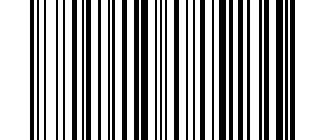
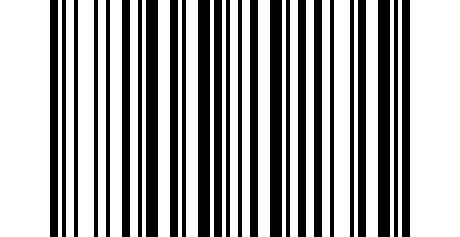

Édition de données#
Format de sortie#
Pour modifier le Format de Transmission de Données de Scannage, scannez l’un des huit codes à barres correspondant au format souhaité.
Format de sortie par défaut#
{kind=link}

* Format de sortie par défaut#
Activer la sortie du suffixe#

Activer la sortie du suffixe#
Activer la sortie du préfixe#
{kind=link}
Activer la sortie du préfixe#
Activer masquer les caractères de début de code-barres#

Activer masquer les caractères de début de code-barres#
Activer masquer les caractères du milieu du code-barres#

Activer masquer les caractères du milieu du code-barres#
Activer masquer les caractères de fin de code-barres#
{kind=link}
Activer masquer les caractères de fin de code-barres#
Préfixe#
Ajouter un préfixe#

Ajouter un préfixe#
Effacer tout le préfixe#
{kind=link}
Effacer tout le préfixe#
Étapes d’opération#
Étape 1. Si la sortie du préfixe n’est pas activée, vous pouvez l’activer en définissant le format de sortie;
Étape 2. Si vous avez défini un préfixe avant, le nouveau préfixe sera après le préfixe ajouté précédemment. Si vous voulez supprimer le contenu précédent et le reconfigurer, veuillez d’abord analyser « Effacer le préfixe », puis effectuer les actions suivantes ;
Étape 3. Scannez pour ajouter un préfixe
Setp 4. Déterminer la valeur hexadécimale à deux chiffres du caractère de préfixe à ajouter; se référer à ASCII Chars Table
setp 5. Scannez le code de réglage numérique: scannez la haute valeur hexadécimale, puis scannez la faible valeur;
setp 6. Répétez les étapes 4 et 5 pour ajouter le caractère suivant.
Note
ex: Vous voulez ajouter « Ctrl+A » comme préfixe, scanner “add prefix”, “9”,7”,”4”,”1”.
Suffix#
Ajouter un suffixe#

Ajouter un suffixe#
Effacer tout le suffixe#

Effacer tout le suffixe#
Étapes d’opération#
Étape 1. Si la sortie du suffixe n’est pas activée, vous pouvez l’activer en définissant le format de sortie;
Étape 2. Si vous avez défini un suffixe avant, le nouveau suffixe sera placé après le suffixe précédemment ajouté. Si vous avez besoin de supprimer le contenu précédent et de le configurer à nouveau, veuillez d’abord scanner « Effacer le suffixe » et ensuite effectuer les opérations suivantes ;
Étape 3. Scannez pour ajouter un suffixe;
Setp 4. Déterminer la valeur hexadécimale à deux chiffres du caractère de suffixe à ajouter; se référer à la [table de caractères ASCII] (#ascii-chars-table);
setp 5. Scannez le code de réglage numérique: scannez la haute valeur hexadécimale, puis scannez la faible valeur;
setp 6. Répétez les étapes 4 et 5 pour ajouter le caractère suivant.
Cacher le jeu#
Cacher les caractères de départ du code-barres#

Cacher les caractères de départ du code-barres#
Cacher le début du code barre moyen#

Cacher le début du code barre moyen#
Cacher les caractères moyens du code-barres#

Cacher les caractères moyens du code-barres#
Cacher les caractères de fin de code-barres#

Cacher les caractères de fin de code-barres#
Étapes d’opération#
Étape 1. Scannez le symbole Hide Barcode Start / Middle Start / Middle length / End Chars.
Étape 2. Déterminer la valeur hexadécimale de la longueur que vous souhaitez entrer (masquer 4 caractères, scanner 0,4; cacher 12 caractères, scanner 0,C).
Étape 3. Scannez la valeur hexadécimale à 2 chiffres à partir du diagramme de programmation.
Étape 4. Scannez le format de sortie Start/Middle/End pour activer ou annuler masquer char la fonction.
Configuration rapide#
Ajouter un préfixe#
Astuce
Les caractères spéciaux doivent être traités au format hexadécimal, et
\xest ajouté devant le contenu hexadécimal pour indiquer le format hexadécimal.Veuillez vous référer à la table de caractères ASCII pour les caractères spécifiques convertis en caractères hexadécimaux.
Exemple: Pour ajouter un 0x03 au contenu, le contenu d’entrée devrait être : \x03
Ajouter un suffixe#
Astuce
Les caractères spéciaux doivent être traités au format hexadécimal, et
\xest ajouté devant le contenu hexadécimal pour indiquer le format hexadécimal.Veuillez vous référer à la table de caractères ASCII pour les caractères spécifiques convertis en caractères hexadécimaux.
Exemple: Pour ajouter un 0x03 au contenu, le contenu d’entrée devrait être : \x03
Masquer le contenu du milieu du code-barres#
Masquer le contenu de fin de code-barres#
Remplacer le contenu du code-barres#
Astuce
Les caractères spéciaux doivent être traités au format hexadécimal, et
\xest ajouté devant le contenu hexadécimal pour indiquer le format hexadécimal.Veuillez vous référer à la table de caractères ASCII pour les caractères spécifiques convertis en caractères hexadécimaux.
Exemple: Pour ajouter un 0x03 au contenu, le contenu d’entrée devrait être : \x03
Annexe#
Codes à barres numériques#

0#

1#

2#
{kind=link}
3#

4#

5#

6#

7#
{kind=link}

8#

9#

A#

Os#

C#

D#

E#

F#